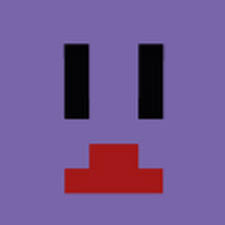

| アイコン | 名前 | イメージカラー | 運営内での立ち位置、役割 | |
|---|---|---|---|---|
| らっだぁ | 青 | マイクラ青鬼ごっこの主催者 よく罵倒される | ||
| 金豚きょー | 黄、金 | 周りからはばどきょー、きょーさんと呼ばれており企画で使うワールドの作成を行っている | ||
| みどりくん | 緑 | 運営の中では初期のメンバーイタズラが好きでよくごっこ企画中のらっだぁにイタズラをしている:通称ミドリクソ | ||
| レウクラウド | 赤 | 運営のツッコミ役。周りからはれうさんやれうくらなどと呼ばれており館の修復や仕込みが主な役割最近では「イダバー！」などと変な叫び声をするようになった | ||
| コンタミ | 紺 | 役割はレウクラウドと同じで館の修復や仕込みをする他アスレの時間の計測などを行っている周りからはコンちゃんと呼ばれており独特な絵のセンスの持ち主 | ||
|  | 近海の鯖（高橋ナルミ） | 紫 | 企画の手伝いをする他の運営の4人とは違い表立って活動はしていなく、ら民生活鯖の管理者である運営内での役割は鯖の管理もそうだが毎週金曜日と土曜日に行われるらっだぁ主催マイクラ企画青鬼ごっこ裏企画の運営&鯖主をしている |